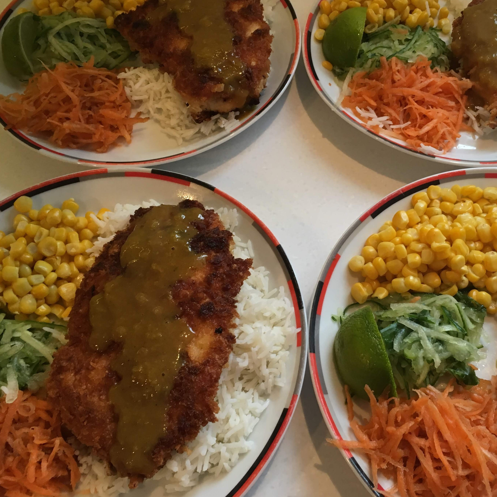

Chicken Katsu curry with sesame toasted broccoli

- Prep time: 10 mins
- Cook time: 25 mins
- Servings: 4
Ingredients:
- 1 cup rice
- sunflower oil
- 1 onion
- 2.5cm fresh root ginger (or 1 tbsp ginger paste)
- 2 garlic cloves
- 1 tbsp medium cury powder
- 2tbsp plain flour
- 500ml chicken stock
- 1tbsp soy sauce
- 2tsp honey
- 4 chicken breasts
- 50g plain flour
- 1 large egg
- 100g panko bread crumbs
- lime
- a small bag of longstem broccoli
- 2tbsp sesame oil
- 1tsp sesame seeds
Method:
- Boil 1 cup rice with 2 cups of boiling water and leave to cook for 12 minutes.
- Finely chop the onion, peel and grate the ginger and crush the garlic cloves.
- Heat some oil in a sauce pan and fry the onions over a medium heat for 5 minute, until they soften and turn golden brown.
- Add the ginger and garlic, cook for a further min.
- Stir in the curry powder and flour, cook for a min.
- Gradually add the stock whilst mixing to avoid lumps forming.
- Add the soy sauce and honey, bring to the boil.
- Simmer for 10 to 15 mins to reduce until thickend to your preference.
- If you prefer a smoother sauce, blitz using a hand held blender or wait until cooled and blitz in a blender.
- Beat the chicken breasts to an even thickness.
- Put the flour, egg and breadcrumbs into separate shllow bowls.
- Dip each chicken breast into flour (tap off the excess), then egg and finally breadcrumbs.
- Repeat until all the chicken breasts are coated.
- Heat a layer of oil in a large non stick frying pan over a medium heat.
- Cook chicken for 5 mins on each side or until cooded